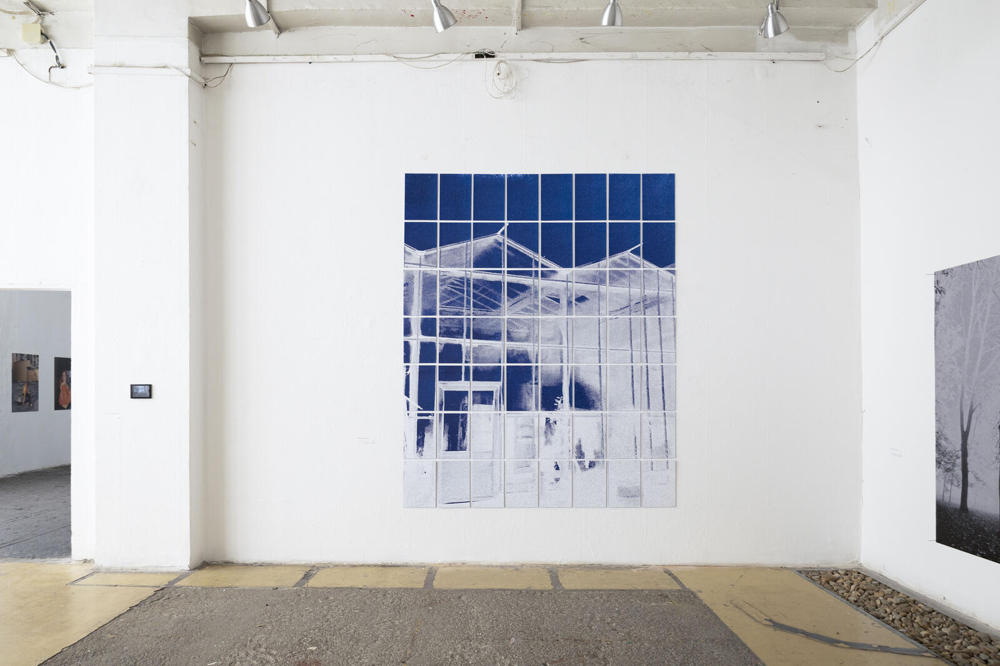
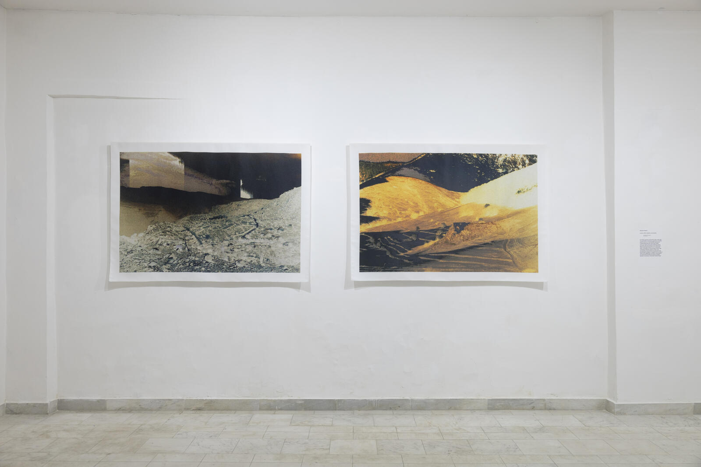
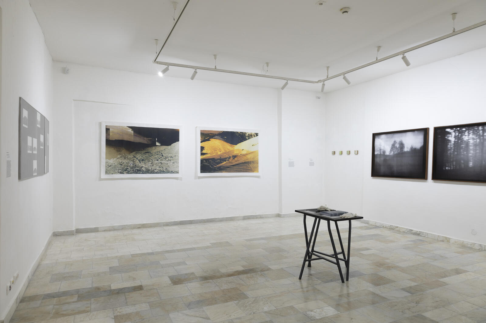

Exhibition views
Képminimum, (MOME Photography BA Graduation Show) // Artus Studio, Budapest, 2023
Installation view from the work Under Construction. The installation form refers back to the title of the project, its execution evokes the process of construction planning and is based on the visuality of graph paper.
Digital print mounted on foam board, 3 m x 2,4 m

Abandoned present, Janus Pannonius Museum, Pécs, 2025
Installation view from the work Lichen
Print on poliester, 3 m x 2,4 m

